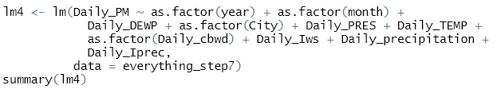

Featured Project: Air Pollution Analysis
Abstract and Code
Air pollution is a major health hazard across the world. Significant research has been done into its effects on human health. However, the ability to predict the severity of air pollution can help guide policymakers and everyday people to make educated decisions to improve their lives. Autoregressive models as well as a multivariate linear regression model are generated in an attempt to create a good model suitable for predicting air pollution. Read more...
